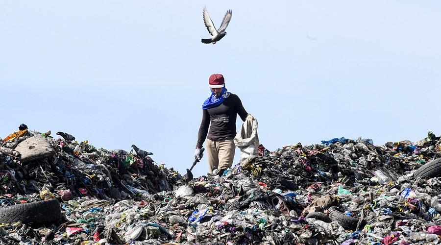
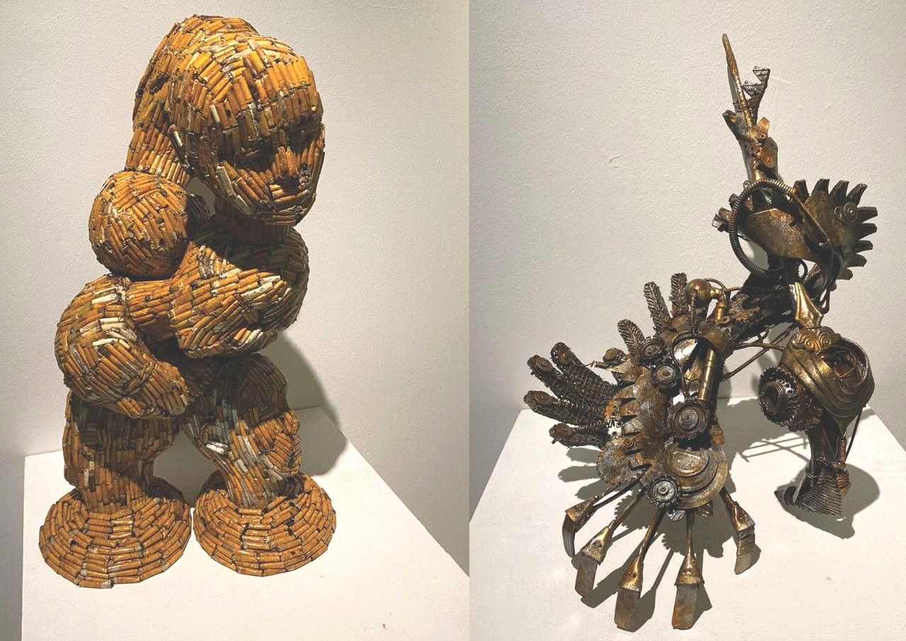
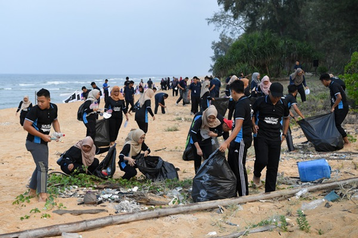
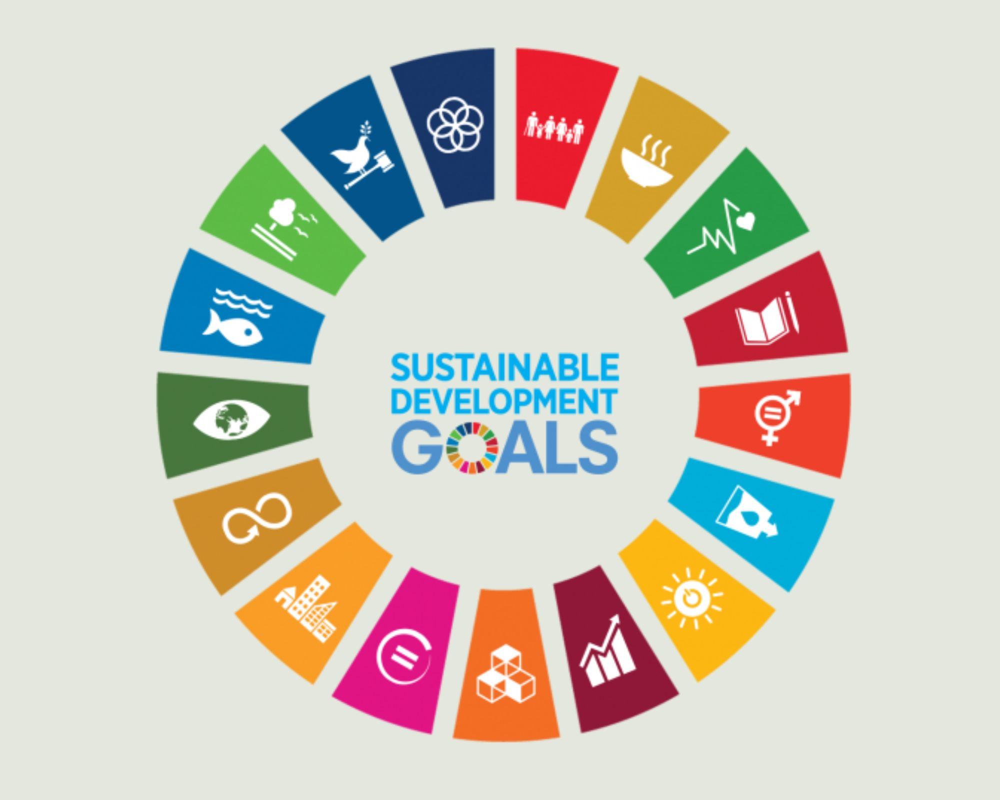

Sustainability Impact

Impact Overview
CPS Upcycling creates meaningful environmental, educational, and social impact by applying the Creative Problem Solving (CPS) approach to encourage innovative reuse of waste materials. The platform promotes sustainability while strengthening creative thinking skills.

Environmental Impact
- Reduces waste sent to landfills
- Encourages recycling and upcycling practices
- Promotes sustainable material usage
- Supports environmental conservation awareness

Educational Impact
- Enhances creative and critical thinking skills
- Introduces Creative Problem Solving (CPS)
- Applies SCAMPER technique for idea generation
- Supports experiential learning in sustainability

Social & Community Impact
- Encourages community involvement
- Promotes collaboration and idea sharing
- Builds environmental responsibility
- Supports creative community initiatives

User Impact
- Provides structured idea guidance
- Helps overcome creative block
- Improves confidence in upcycling ideas
- Offers a user-friendly experience

Contribution to Sustainable Development Goals (SDG)
- SDG 9 – Industry, Innovation and Infrastructure
- SDG 11 – Sustainable Cities and Communities
- SDG 12 – Responsible Consumption and Production
- Encourages sustainable innovation
Future Impact Potential
CPS Upcycling has the potential to expand through additional waste categories, community sharing features, and integration with educational institutions to further strengthen sustainability impact.